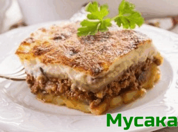
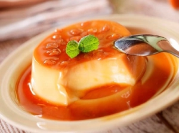

Български рецепти
Мусака
Необходими продукти:
- кайма – 500 г
- картофи – 500 г
- лук – 100 г
- моркови – 50 г
- червени чушки – 70 г
- домати – 3 с.л. (на кубчета от консерва)
- магданоз – 4-5 стръка (пресен)
- олио – 40 мл
- червен пипер – 2 с.л.
- черен пипер
- сол
- яйца – 2 бр.
- брашно – 2 с.л.
Начин на приготвяне:
Нарежете лука, чушката и моркова на ситно. Запържете ги с олиото и каймата в тиган. Бъркайте постоянно, за да се раздроби добре каймата и да стане на трохи. Овкусете с червен, черен пипер и сол. Нарежете обелените картофи на кубчета и ги сложете в средноголяма тава. Сипете каймата. Разбъркайте добре и налейте гореща вода, колкото да се покрият картофите. Гответе в гореща фурна на 200°C до омекване на картофите. Добавете доматите и наситнения магданоз. Гответе още около 10 мин.
Направете заливката като разбиете добре яйцата с млякото и брашното. Сложете щипка сол и полейте равномерно мусаката. Печете в средата на фурната само на горен реотан до запичане на заливката на мусаката. Сервирайте с лъжица или две кисело мляко.
Крем карамел
Необходими продукти:
- прясно мляко – 1 л
- захар – 1 ч.ч. за крема + 1/2 ч.ч. за карамелизирането
- яйца – 6 броя (едри)
- ванилия – 1 пакетче
Начин на приготвяне:
Сипете захарта за карамелизирането в съд на котлона заедно с малко вода и нагрявайте, докато се получи златист карамел. Разпределете го в предварително подготвените формички. Разбийте яйцата, останалата захар, ванилията и прясното мляко и разпределете сместа в купичките. Наредете ги в дълбока тава, долейте вода в тавата до 1/2 на формите и сложете да се пекат, докато хванат приятна кафеникава коричка отгоре. Пече се на слаба фурна 1 час, на около 150-160°C, защото водата не трябва да завира. В противен случай крем карамелът ще стане на балончета/шупли.
Селски хляб

Необходими продукти:
- мая – 1 кубче прясна (42 г) или 2 пакетчета суха
- брашно – 700-800 г
- вода – 450 мл (топла)
- захар – 1 ч.л.
- сол – 1 с.л.
Начин на приготвяне:
В топлата вода разтваряме маята заедно с лъжичката захар и малко брашно и оставяме да шупне. В отделен съд пресяваме брашното заедно със солта, правим кладенче и слагаме шупналата мая.
Замесваме меко еластично тесто, което слагаме в набрашнена купа, за да втаса. Когато тестото почти удвои обема си, го премесваме, оформяме като топка и поставяме в намазнена и набрашнена тава, в която ще печем, за да втаса още веднъж.
След като тестото отново удвои обема си, непосредствено преди да сложим да се пече, с помощта на остър нож се правят няколко разреза. Печем в предварително загрята фурна на 200°C, на дъното на която сме сложили съд с вряща вода около 50 минути.
Ако не харесвате хрупкавата коричка, която се получава, може преди да сложите хляба да се пече, да го намажете с малко кисело мляко.